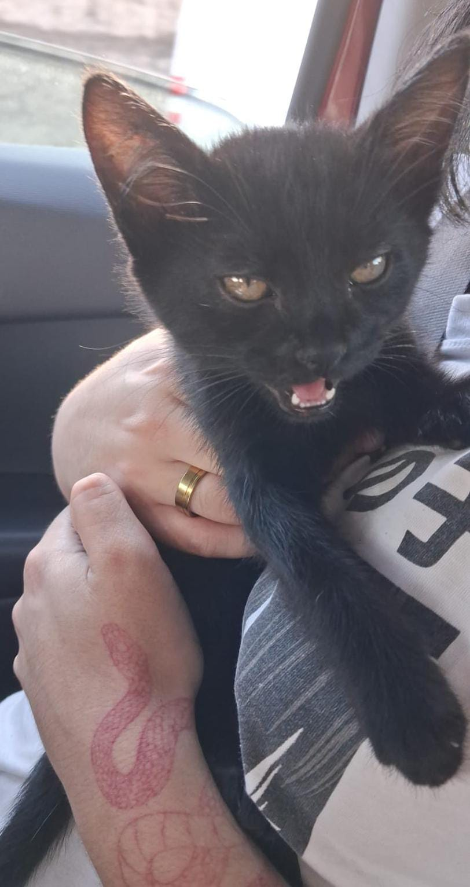

Conheça o Space Cat Coffee
Um café diferente em Curitiba
Localizado no bairro Batel, em Curitiba, o Space Cat Coffee tem chamado a atenção por unir duas paixões: café e gatos.
Ambiente temático e acolhedor
O espaço possui uma decoração temática cheia de referências felinas, criando um ambiente confortável e convidativo para os visitantes.
Interação com gatos
Além do café, os clientes podem interagir com gatos em um espaço reservado, proporcionando momentos de carinho e conexão com os animais.


